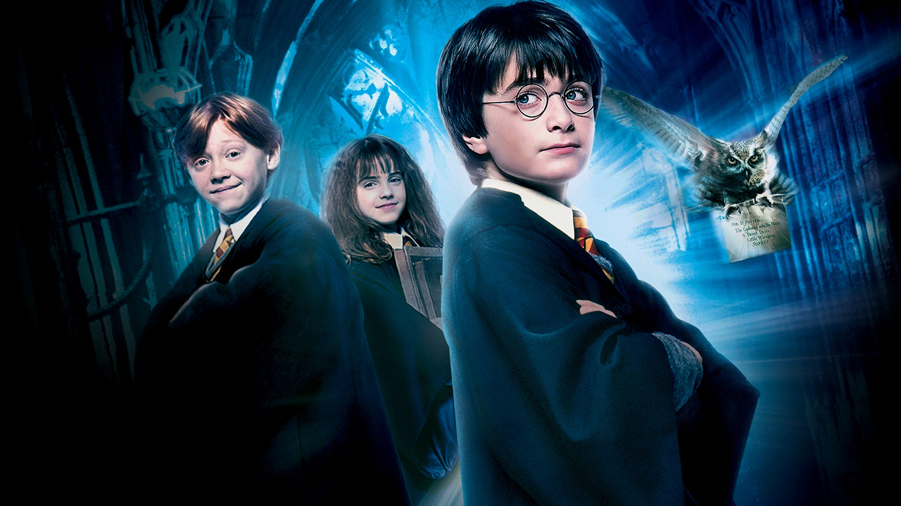

Todo un éxito
Harry Potter es el nombre por el que se conoce a la serie de novelas de fantasía escritas por J. K. Rowling y las películas basadas en ellas. El principal protagonista de las mismas es el joven mago Harry Potter.

El manga One Punch Man actualmente es publicado por la editorial Shueshia desde el 2012, pero inicialmente se trataba de un web-manga gratuito, escrito y dibujado por One (un mangaka freelance)que comenzó a aparecer online en el 2009. La calidad del guión y su estructura dramática permitieron que la idea fuera comprada por Shueshia, por lo que se contrató a One para escribir los guiones y se empleó al mangaka profesional Yusuke Murata para que ilustrara el nuevo manga editorial, ya que los dibujos de One son bastante simples y burdos, como simples bocetos (las imágenes inferiores muestran la comparación de ambos estilos gráficos). El manga de Shueshia alcanzó su noveno número el pasado junio, y el web-manga aún sale periódicamente con su estilo visual clásico.


El dibujo de One Punch Man (de Shueisha) es sencillamente fantástico. Tiene un grado de detalle y un cuidado en los diseños anatómicos que supera ampliamente a muchos cómics estadounidenses, pero también se permite presentar a Saitama dibujado de manera más simple para mantener el espíritu del soporte digital original del manga (al menos hasta que se enoja, entonces ahí se pone serio y adquiere un grado de detalle fabuloso).